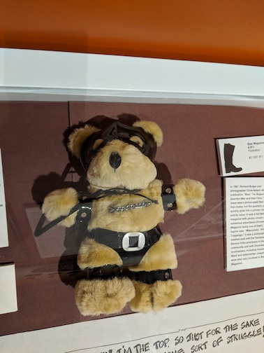
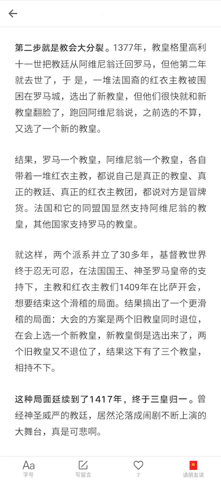

2018年9月。上一期是8月刊。
散心
9月，为了提振心情，我们去了周围很多地方，好些我来了这么多年也没有去过。。
以怪奇物语为主题的 corn maze，这次每个点都走到了，我们中间还迷路了两次
芝加哥的 Leather Archives & Museum，非常哲♂学了！
- 
拥有养在室内的长颈鹿以及养在室外的北极熊的芝加哥动物园😂
能去亲自摘苹果，摘南瓜的农场
我们还一起去跑了半马
……

见闻
最近发现的最珍贵的一个资源是陈海贤老师的《自我改变心理学》课，每一篇都说到了我的心坎里！！🙏
上个月刚说已经几个月没有读完书了，9月就读了几本——《鱼翅与花椒》。作者是一个90年代来到成都的留学生，为了学做菜甚至去了厨师学校。。作为一个已经把其他外国人说成老外、经常自称我们四川blabla的“外国人”，她留下的中华饮食探索记忆非常真挚诚恳。对比起来，我很有自知之明，自己永远成为不了一个吃货了。
《We bare bears》里的熊熊们🤗
我们去看了《Searching》，我对这种完全屏幕化的表现形式很有好感，然后去看《Unfriended: Dark Web》，一样的表现形式，但是内容引起了极度不适🤢。
发现了一个新的UP主：史里芬大史记（B站、微博）。最早是在日谈公园里的某一期访谈了解到这个UP主的，访谈和视频一样超有意思。😂😂😂
《Machine Learning Yearning》吴恩达的 ML 经验谈，现在完结了，完整版在这里。
历史上曾经出现过同时有3个教皇的时期😂😂😂。——《李筠·西方史纲50讲》
- 